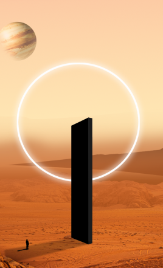
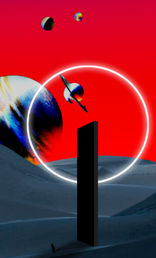
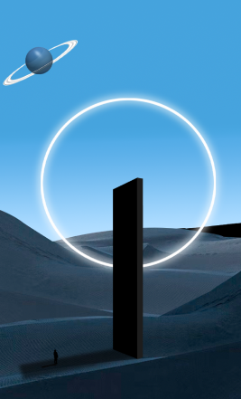
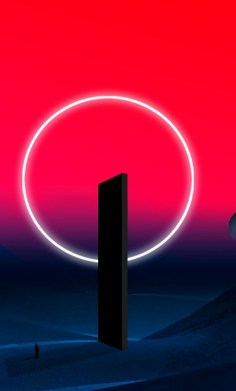
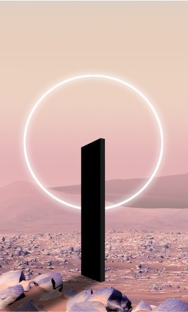
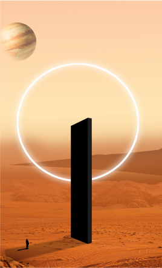
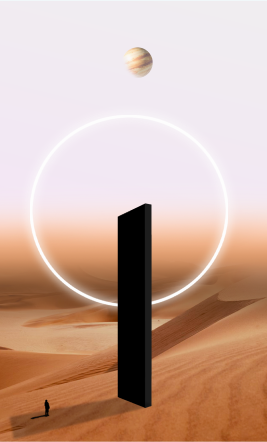

A curious black monolith in terra incognita. Join {{site.title-styled}} in our “Space Odyssey”: opening the gateway to a decentralised future.
We have created 11,633 carefully crafted D{{site.debond-white-slash}}NFTs in four true utility classes. This mysterious, ethereal monolith will bring you to a new world full of possibilities.







DECENTRALISED GOVERNANCE
{{site.title-styled}} is above all a community aiming to bring real change into DeFi. We make transparent, community-led, decentralised governance possible on our comprehensive platform.
D{{site.debond-white-slash}}NFTs can be converted into voting power in all D{{site.debond-white-slash}}Projects. By minting a D{{site.debond-white-slash}}NFT, you get access to the initial whitelistings of all D{{site.debond-white-slash}}Projects.